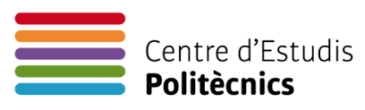

Breve presentacion
Me llamo Marc Plans, y soy estudiante del ciclo de grado medio de Sistemas Microinformaticos y Redes (Smix) en el Centro de estudios politecnicos de Barcelona, me considero una persona trabajadora y constante, me gusta mucho la programacion web y las redes
|  |  |
 |
Introduccion a la web
El principal objetivo de este sitio web es que cualquier usuario que la visite se lleve mas idea de como soy a nivel profesional, por lo tanto por mi parte os deseo una gratificante experiencia. Debo aclarar que esta pagina ha sido creada con html.